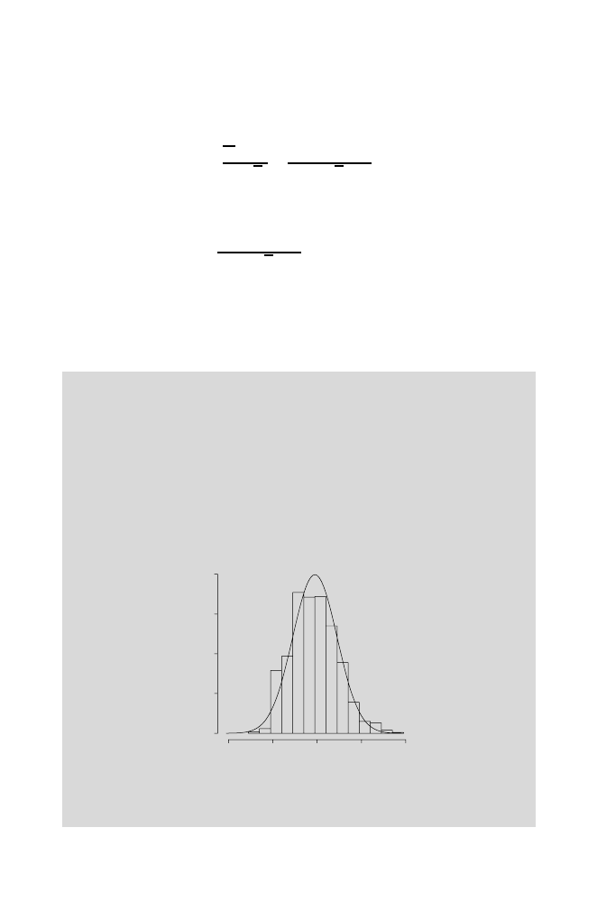

80
3 Word Distributions and Occurrences
the approximation improving as the sample size increases. The terms on the
right involve the standard normal distribution function in (3.9). We note that
X
n
−
µ
σ/
√
n
=
n
i
=1
X
i
−
nµ
σ
√
n
,
obtained by multiplying the top and bottom of the left-hand side by
n
. This
gives a version of the Central Limit Theorem for sums:
P
a
≤
n
i
=1
X
i
−
nµ
σ
√
n
≤
b
≈
Φ(
b
)
−
Φ(
a
)
.
(3.11)
To show the Central Limit Theorem in action, we use simulated binomial
data (see Figure 2.1). In the box below, we show how to use
R
to superimpose
the standard normal density (3.8) on the histogram of the simulated values.
In each case, we
standardize
the simulated binomial random variables by
subtracting the mean and then dividing by the standard deviation.
Computational Example 3.3: Illustrating the Central Limit Theo-
rem
First, we generate 1000 binomial observations with
n
= 25
, p
= 0
.
25, and then
standardize them.
> bin25 <- rbinom(1000,25,0.25)
> 25 * 0.25
# Calculate the mean
[1] 6.25
> sqrt(25 * 0.25 * 0.75) # Calculate standard deviation
[1] 2.165064
> bin25 <- (bin25 - 6.25)/2.1651 # Standardize observations
Density
0.0
0.1
0.2
0.3
0.4
-4
-2
2
4
0
Fig. 3.2.
Histogram of 1000 standardized replicates of a binomial random variable
with
n
= 25 trials and success probability
p
= 0
.
25. The standard normal density is
superimposed.